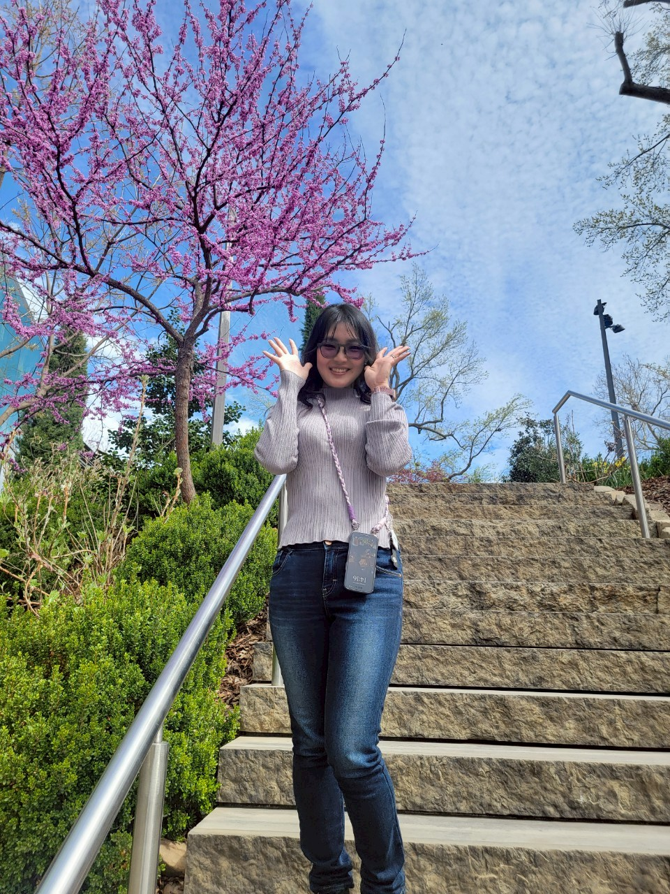

ABOUT
自己紹介

1993年生まれ、鹿児島県在住。 医療事務や美容クリニックでの実務を通じて、院内掲示物やWebサイトの管理に携わったことが、デザインやweb制作の世界に興味を持つきっかけとなり、何もない真っ白な状態から、コードを積み上げて形にしていくプロセスに深い喜びを感じ、本格的にWebデザイナーへの道を志しました。
前職までのキャリアで一貫して大切にしてきたのは、「相手の状況を察し、思いやる気持ち」です。その経験を活かし、「使う人が迷わず、ふと心が軽くなるような、体温のある優しいデザイン」を形にしていきたいと考えています。
「なぜ？」と思ったことは納得いくまで徹底的にリサーチし、一度取り組んだことは細部まで妥協せず最後までやり遂げる。
そんな持ち前の探究心と粘り強さで、一つひとつの制作に丁寧に、誠実に向き合います。
思い立ったら即行動タイプ。
仕事もプライベートも色々なことに挑戦するのが好き。ゆえに多趣味。
始めたら気が済むまでずっとやってる。その時の集中力は寝食忘れるほどのもの。
うまくいかないこともあるけど、何とかなると思って気長に頑張る。
自分から色々な人に話しかけに行って、その場の会話を楽しむ。
自分が話すよりは、話を聞くことのほうが多い。
キャンプに行って自分の秘密基地を作って過ごしたり、行き先を決めずドライブをして新しい景色を見つけておいしいものを食べたり、自由気ままに車中泊旅をすることがすき。
もちろん飛行機に乗る旅行もしますよ。
小説や海外ドラマ、アニメをみながらゆっくり過ごす時間もすき。
やりたいことが多くて1日の時間が足りないと思ってる。
でも、部屋から出ない、なにもしない、1日があっという間に終わる日もある。
英語を勉強中で、いつかは洋楽や海外ドラマを最初から最後まで字幕なしで観たい。聞きたい。翻訳なしで海外旅行がしたい。
今できること
Webデザイン
「ただ綺麗なサイト」ではなく、「相手を思いやる視点」を大切にしています。使う人が迷わず、必要な情報へスムーズに辿り着けるような、親切な設計を心がけています。
Web development
デザインの意図を正確にブラウザ上で再現します。ただ表示させるだけでなく、後からの更新や修正がしやすい「整理されたコード」を書くことを意識しており、運用面の使いやすさも追求します。
レスポンシブ対応も可能です。AIを使用して複雑な動きを実装しています。
使用できるツール
Illustrator
ロゴ制作や名刺・ショップカードなどの印刷物、ベクターイラストの作成に使用します。
Photoshop
丁寧なレタッチや、目的に合わせたバナー制作に使用します。「清潔感」や「素材の良さ」を損なわない、誠実な画像編集を心がけています。
Canva
SNS用の画像や、クライアント様側で手軽に更新が必要なテンプレート作成に活用しています。
Figma
Webサイトのワイヤーフレーム作成やレイアウト設計に使用します。全体の構成を可視化し、スムーズな制作進行をサポートします。
スキル
HTML/CSS
規則性のあるコーディングを行うことができます。Visual Studio Codeを使用しています。
JavaScript
サイトに適切な「動き」を加えることで、操作性を高めるために使用します。派手な演出よりも、心地よいリズム感や使いやすさを重視しています。
WordPress
CSSを加えてテーマをカスタマイズし、Webサイトを制作することができます。既存テーマのカスタマイズから、ブログ機能の実装まで対応。専門知識がなくても更新しやすいサイト環境を提供します。